Personal Works 개인 작업
* All the projects listed below were developed solely by me.
* 아래 모든 프로젝트들은 1인 개발한 프로젝트들입니다.
Packaging box Mockup generator
다양한 모양의 상자의 목업을 웹에서 제작할 수 있는 웹 어플리케이션
이미지를 추가하여 텍스처를 입힐 수 있고, 원하는 사이즈를 입력하면 실시간으로 사이즈에 맞는 전개도와 목업이 생성합니다.
기본적인 화면 이동, 확대/축소, 이미지 이동, 확대/축소, 자르기/늘리기 기능을 제공합니다.
가변적인 길이를 가진 전개도를 표현할 수 있는 Scheme을 XML 파일 형식에 여러가지 수식을 넣을 수 있도록 구성하여,
해당 수식을 파싱하여 사용자가 입력한 값에 따라 사이즈에 맞는 전개도가 유연하게 그려지게 됩니다.
수식을 계산하는 비용을 캐싱을 통해 적절히 최적화 하였습니다
XML Scheme에는 크기 및 크기 제약 조건, 전개도 모양, 애니메이션을 위한 타임라인 데이터 등 다양한 정보가 포함되어 있습니다.
매끄러운 모서리 처리를 통해 박스가 접히는 부분 또한 텍스처가 자연스럽게 적용됩니다.
완성한 전개도는 Vector 형식의 PDF로, 목업 화면은 스크린샷으로 내보낼 수 있습니다.
A Web application that allows users to create mockups of various box shapes on the web.
Users can add images to apply textures. When they input desired sizes, it generates a real-time layout and mockup that match those dimensions.
It provides basic features such as screen navigation, zoom in/out, image movement, resizing, and cropping/stretching functions.
A custom XML shceme is used to represent layout with various lengths.
It can contain numbers, variables, and various formulas like min, max, sin, cos, find intersction of lines, tangent to a circle, etc..
The application creates layout dynamically by parsing the formula.
Some techniques are used to optimize a performance for parsing XML.
Also the XML contains many other informations like default size, size constraints, timeline for animating mockup and so on.
The texture of edge of box are drawn smoothly so the folding parts of the box feels natural.
A completed layout can be exported as a PDF including vector graphics and mockup screen can be exported as a screenshot.
Gene Tree
유전자 데이터를 방사형 이진트리로 시각화해주는 웹 어플리케이션
PC, Mac 에서 프로그램 형태로 사용할 수 있도록 Electron으로 패키징되었습니다.
이동, 확대/축소, 회전 등 화면 제어 기능과, 전체 화면을 Upscaling하여 고해상도 (10,000 x 10,000) 이미지 파일로 저장할 수 있는 기능을 제공합니다.
A web application that visualizes genetic data as a radial binary tree has been packaged with Electron to be used as a program on PC and Mac.
It provides screen control functions such as moving, zooming in/out, and rotating, as well as the ability to upscale the entire screen and save it as a high-resolution (10,000 x 10,000) image file.
 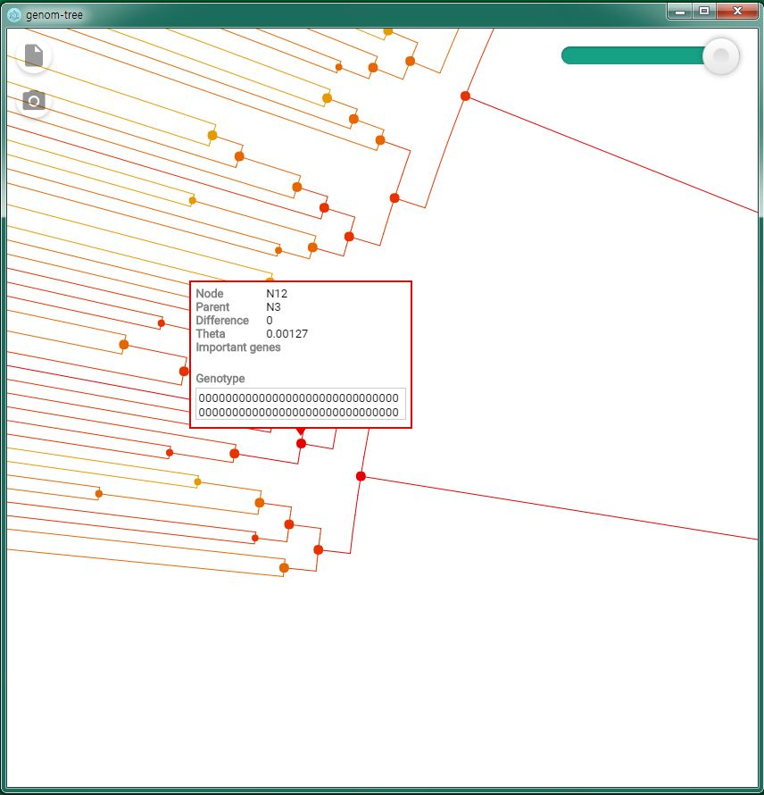
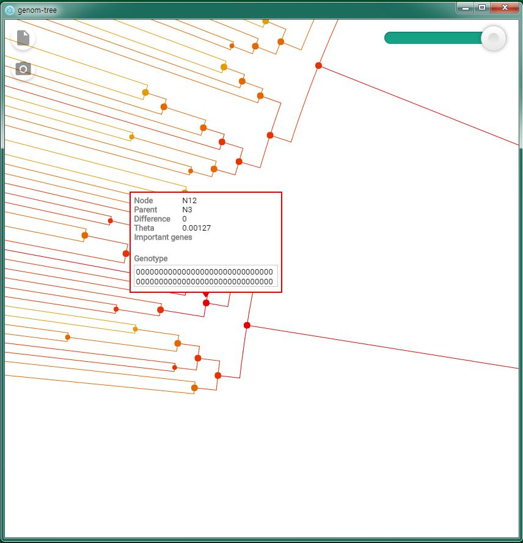
Gene Canvas
대용량 유전자 데이터를 셀 구조로 시각화해주는 웹 어플리케이션
기본적인 화면 조작고 더불어 데이터 필터링, 순서 변경, 행 추가 등의 기능을 제공합니다.
당시 컴퓨터들의 속도가 느렸기때문에 렌더링을 최적화하는데에 신경썼습니다.
A web application that visualizes large-scale genetic data in a cell structure.
In addition to basic screen manipulation, it provides functions such as data filtering, reordering, and row addition.
Due to the slow speed of computers at the time, special attention was paid to optimizing the rendering process.
 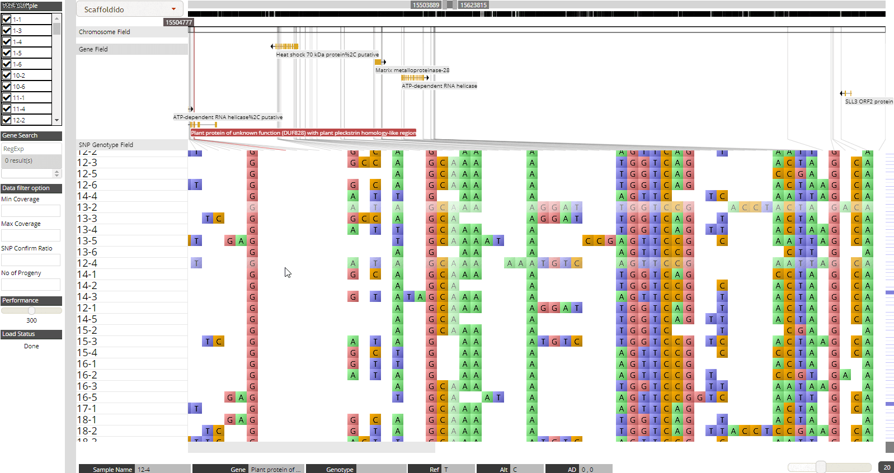
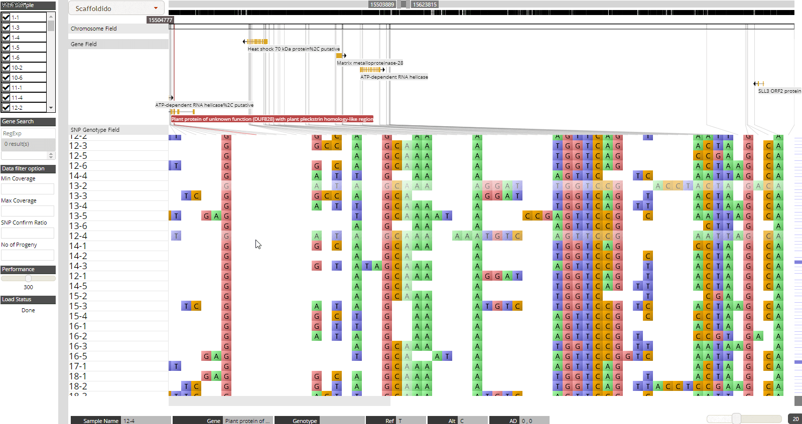
Epidemic Simulator
전염병 확산 시뮬레이션 모델을 웹으로 시각화한 토이 웹 프로젝트
3Blue1Brown의 Simulating an epidemic 영상을 보고 만든 토이 프로젝트
SIR 모델을 기반으로 여러가지 전염병에 관련된 변수를 조작하여 전염병 확산 과정을 간단하게 시뮬레이션 해볼 수 있습니다.
WebGL 2.0이 사용되었으며, 대량의 데이터를 시뮬레이션하고 렌더링하기 위한 필수적인 최적화들이 포함되었습니다.
A toy web project visualizing an epidemic spread simulation model
A toy project created after watching 3Blue1Brown's Simulating an epidemic video
Based on the SIR model, you can simply simulate the process of epidemic spread by manipulating various variables related to epidemics.
WebGL 2.0 was used, and essential optimizations for simulating and rendering large amounts of data were included.

Skeletal Editor
Keyframe 기반 Skeletal Animation을 만들 수 있는 토이 웹 어플리케이션
렌더링에는 ProcessingJS가 사용되었으며, 데이터 내보내기, 불러오기 등이 가능합니다.
제가 만든 첫 웹 어플리케이션입니다.
A toy web application for creating keyframe-based skeletal animation
ProcessingJS was used for rendering, and features such as data export and import are available.
This is the first web application I created.
Olive/Nlive
Premiere Pro 스타일의 영상 편집 프로그램
개인 취미 프로젝트로 진행하였으며, 기본적임 타임라인 편집 / 영상 효과 / 영상 재생등의 기능을 제공합니다.
Olive는 Electron 을 기반으로 React / WebGL / OffscreenCanvas / AudioWorklet / FFEMPG 등
최신 웹 기술과 C++ 네이티브 모듈을 사용하여 구현한 버전이며,
Nlive는 같은 내용을 C++ Qt 기반으로 다시 구현한 버전입니다.
Premiere Pro-style video editing program
Developed as a personal hobby project, it provides basic timeline editing / video effects / video playback functions.
Olive is a version implemented using Electron as a base, along with modern web technologies such as React / WebGL / OffscreenCanvas / AudioWorklet / FFMPEG, and C++ native modules.
Nlive is a version that reimplements the same content based on C++ Qt.

ThumbUp
NAVER 2020 HACKDAY의 주제 중 하나인 썸네일 저작 도구의 요구 사항을 바탕으로 이틀에 걸쳐 제작한 토이 프로젝트입니다.
Angular framework가 사용되었으며, 캔버스는 크기 변경, 이동, 확대, 축소가 가능합니다.
도형은 크기 조절, 회전이 가능하며 그림은 상하좌우 반전 기능이, 텍스트는 폰트 변경 및 색상 변경이 가능합니다.
각 도형(레이어)간의 순서 조절이 가능하며, Undo, Redo 기능을 제공합니다.
3가지 종류의 필터를 적용 가능하며 필터 적용에는 빠른 성능을 위해 WebAssembly를 사용하였습니다.
This is a toy project created over two days based on the requirements of a thumbnail creation toola, one of the themes of NAVER 2020 HACKDAY.
The Angular framework was used, and the canvas can be resized, moved, zoomed in, and zoomed out.
Shapes can be resized and rotated, images can be flipped horizontally and vertically, and text can have its font and color changed.
The order between each shape (layer) can be adjusted, and Undo and Redo functions are provided.
Three types of filters can be applied, and WebAssembly was used for filter application to ensure fast performance.
 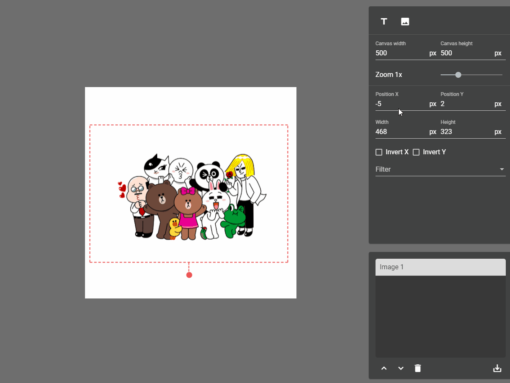
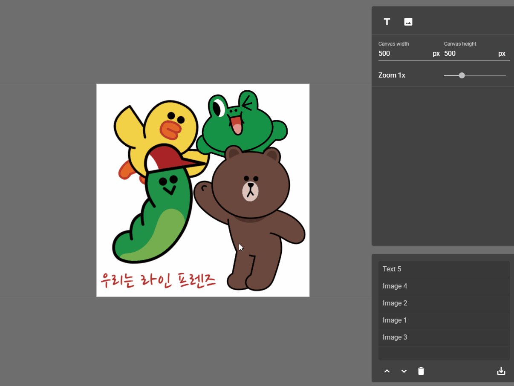
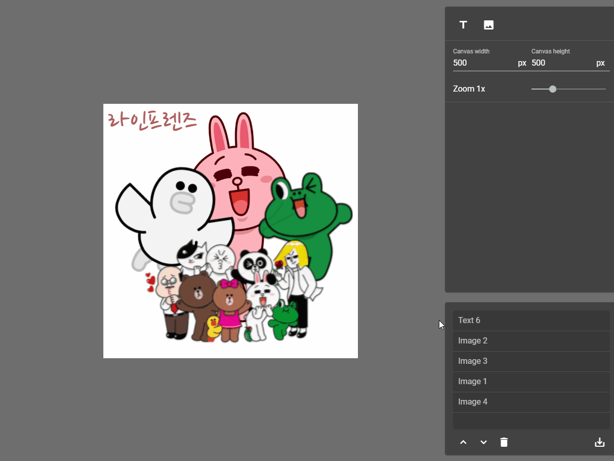
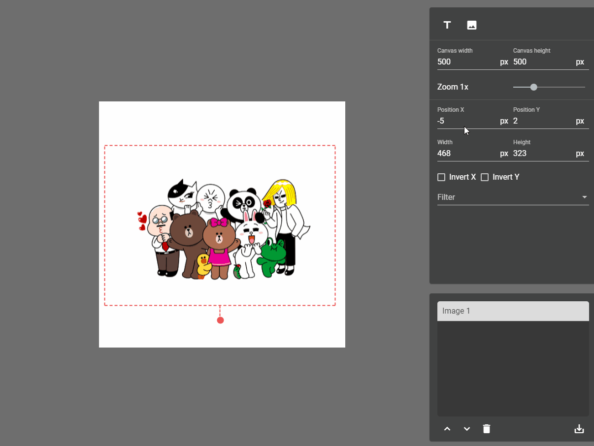
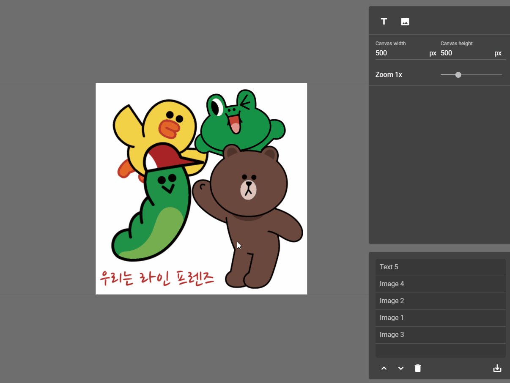
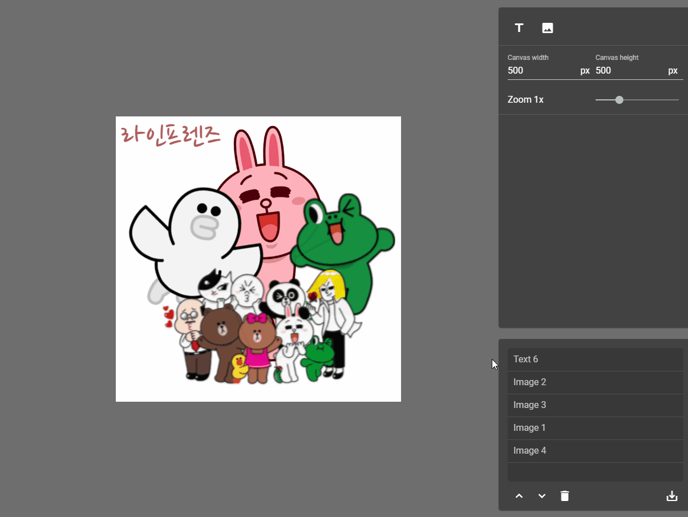
Figure Module
PowerPoint에서 사용할 수 있는 차트, 테이블, 도형등을 웹에서 구현한 웹 모듈입니다.
각 요소들은 크기 조절 / 회전등이 가능합니다. 렌더링에는 HTML5 Canvas가 사용되었습니다.
AngularJS가 사용되어 양방향 데이터 바인딩이 가능합니다.
This is a web module that implements charts, tables, shapes, etc. that can be used in PowerPoint on the web.
Each element can be resized / rotated, etc. HTML5 Canvas was used for rendering.
AngularJS is used, allowing for two-way data binding.
Color Subtitler
비디오 영상에 대한 색상 자막 구간을 편집할 수 있는 웹 어플리케이션입니다.
각 구간마다 단일 색상 또는 패턴 색상을 적용할 수 있습니다.
색상 구간은 그룹화가 가능하며, 그룹화된 구간은 프리셋으로 저장하여 사용할 수 있습니다.
복사, 붙여넣기, 실행 취소(Undo), 다시 실행(Redo)등의 기능을 제공합니다.
This is a web application that allows editing of color subtitle sections for video content.
You can apply a single color or pattern color to each section. Color sections can be grouped, and grouped sections can be saved as presets for use.
It provides functions such as copy, paste, undo, and redo.
 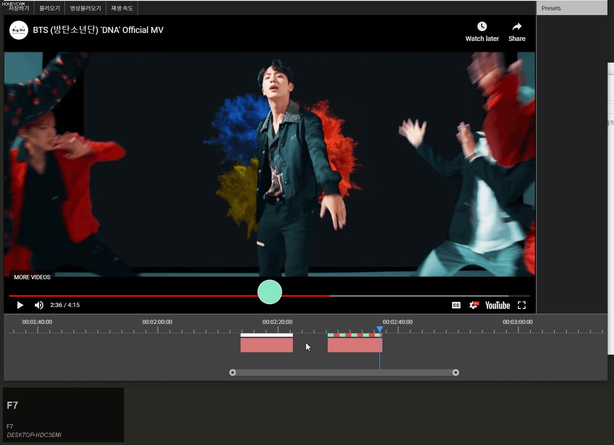
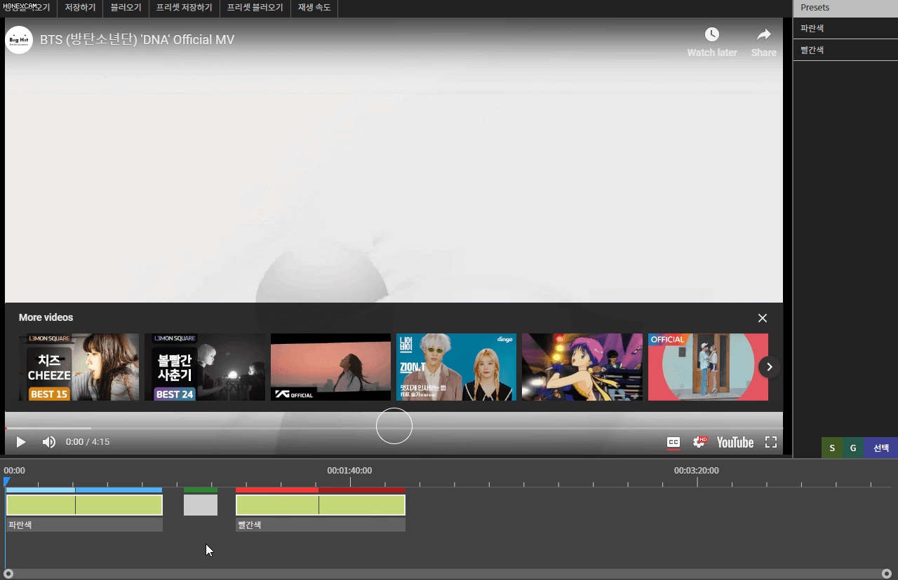
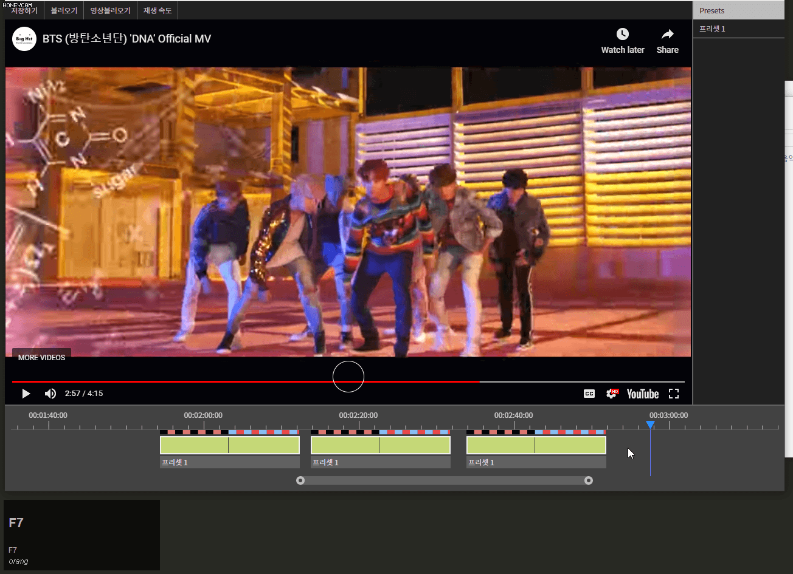
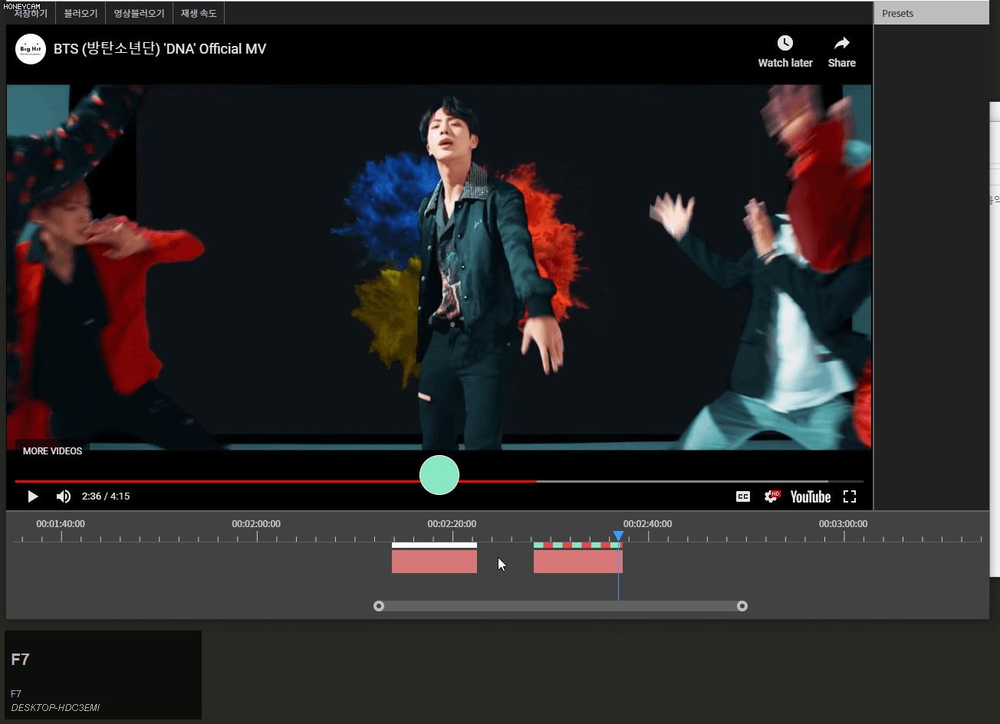
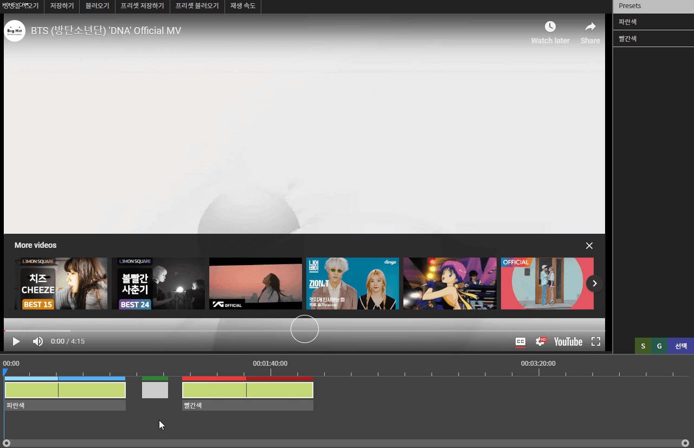
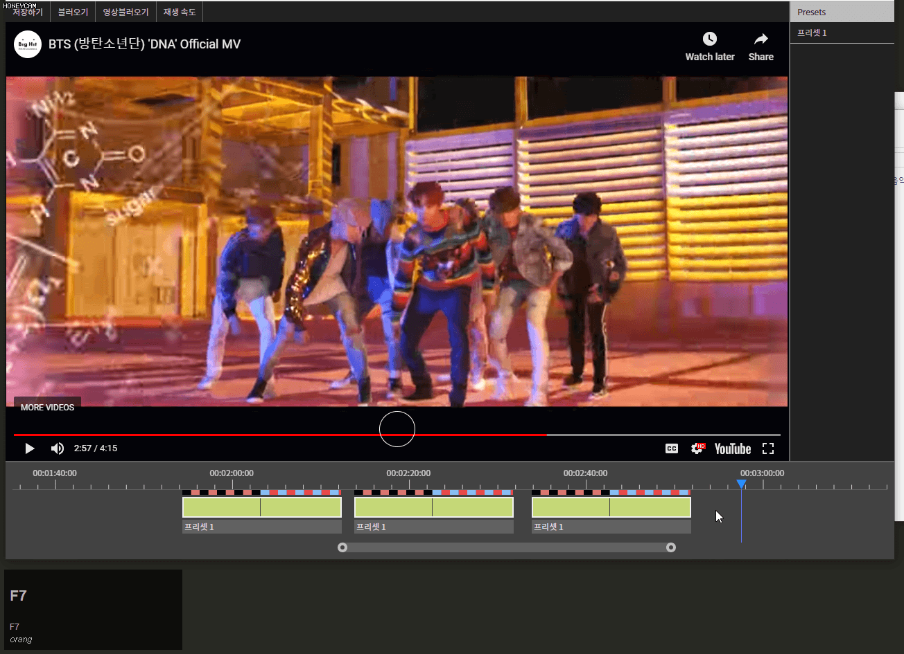
Subtitle Segmentator
비디오 영상에 입힐 자막 구간을 편집할 수 있는 웹 어플리케이션입니다.
This is a web application that allows editing of subtitle sections to be applied to video content.